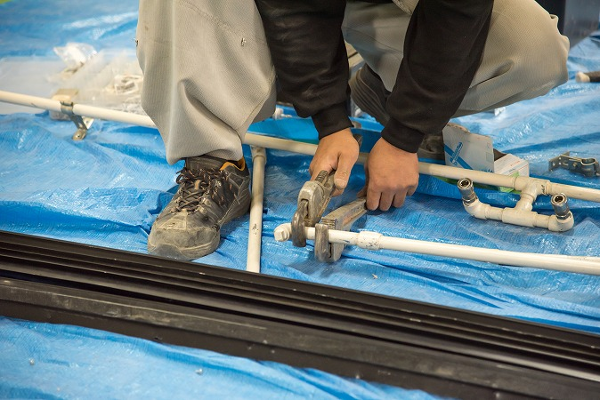
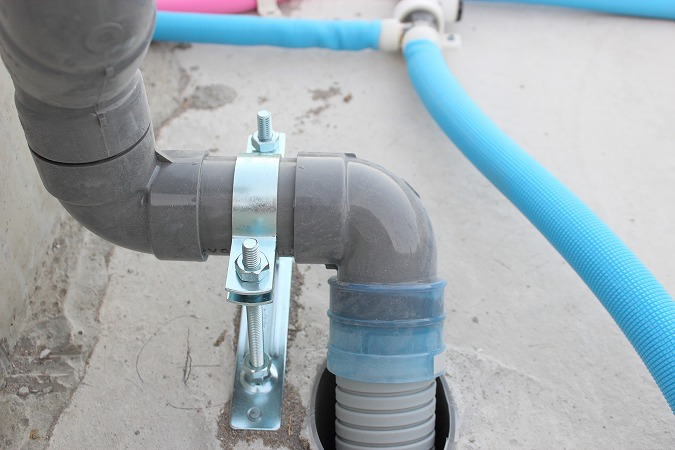
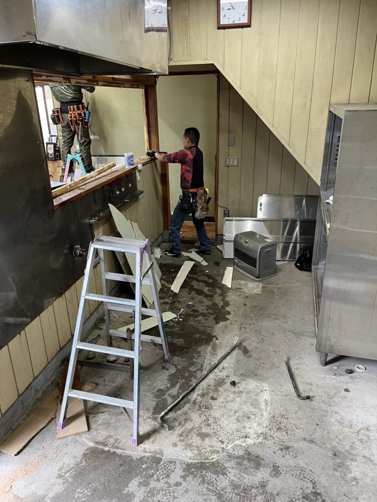

Why Oyokawa
現場を止めない。窓口を増やさない。工務店さまや建設会社さまからご依頼をいただいている理由を、6つにまとめました。
給排水衛生・電気・浄化槽・空調を一社でお受けします。業者ごとの日程調整や取り合いの確認が不要になり、工程管理がシンプルになります。


八匝水道企業団・多古町・旭市・香取市の指定給水装置事業者、旭市・香取市の下水道排水設備指定工事店です。水道の申請から対応します。
管工事施工管理技士・浄化槽設備士・電気工事士などの有資格者が現場を担当します。

Compare
| 項目 | 一般的な設備業者 | オヨカワ設備工業 |
|---|---|---|
| 発注窓口 | 工事ごとに別業者 | ●一社で完結 |
| 水道の申請 | 別途手配が必要な場合あり | ●指定工事店として対応 |
| 浄化槽 | 専門業者へ外注 | ●自社で新設・交換 |
| 電気工事 | 電気業者を別手配 | ●自社で対応 |
| 施工体制 | 外注中心の場合あり | ●有資格者が自社施工 |
And more
平成元年創業の「及川電気設備」が前身です。電気と水、両方が分かる施工をお届けします。
民間工事に加え、匝瑳市の消防団機庫など公共施設の設備工事も手がけています。
匝瑳市を拠点に、旭市・香取市・成田市・山武市など千葉県内へ。引き渡し後の不具合対応も、窓口ひとつでお受けします。